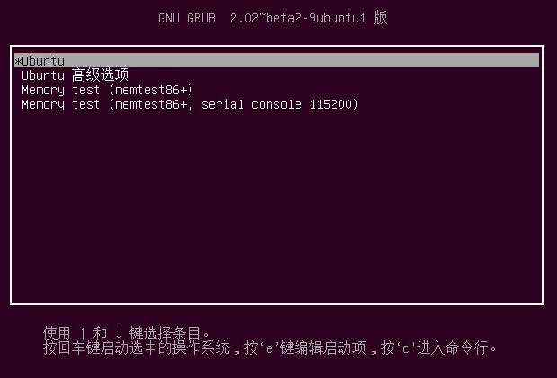
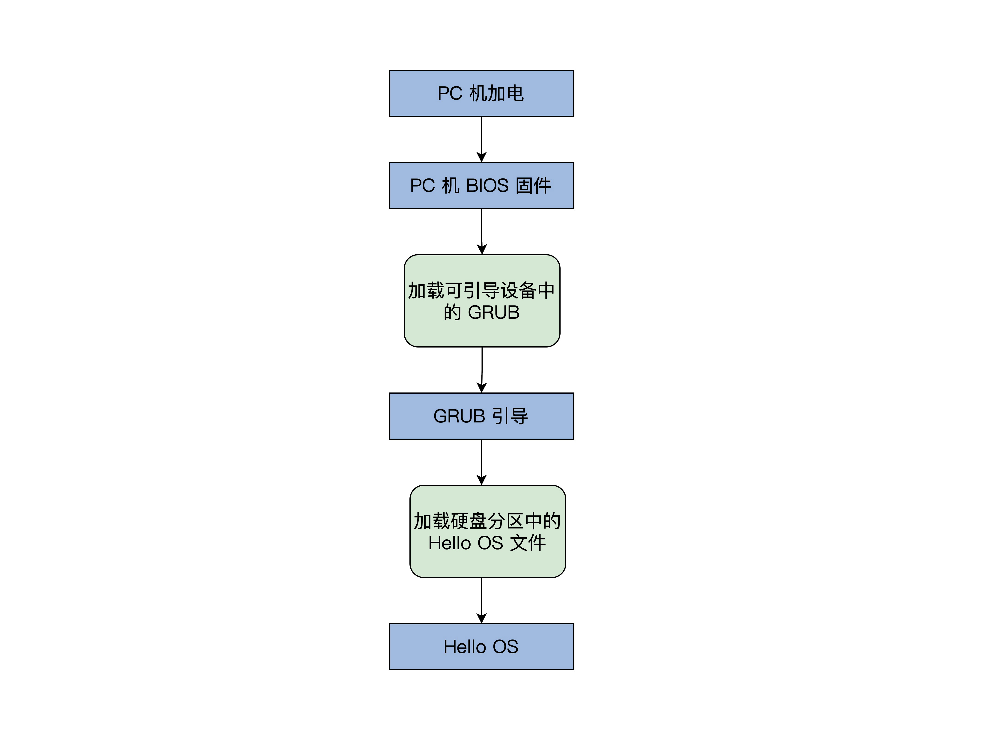

- 00 开篇词 为什么要学写一个操作系统？.md.html
- 00 编辑手记 升级认知，迭代自己的操作系统.md.html
- 01 程序的运行过程：从代码到机器运行.md.html
- 02 几行汇编几行C：实现一个最简单的内核.md.html
- 03 黑盒之中有什么：内核结构与设计.md.html
- 04 震撼的Linux全景图：业界成熟的内核架构长什么样？.md.html
- 05 CPU工作模式：执行程序的三种模式.md.html
- 06 虚幻与真实：程序中的地址如何转换？.md.html
- 07 Cache与内存：程序放在哪儿？.md.html
- 08 锁：并发操作中，解决数据同步的四种方法.md.html
- 09 瞧一瞧Linux：Linux的自旋锁和信号量如何实现？.md.html
- 10 设置工作模式与环境（上）：建立计算机.md.html
- 11 设置工作模式与环境（中）：建造二级引导器.md.html
- 12 设置工作模式与环境（下）：探查和收集信息.md.html
- 13 第一个C函数：如何实现板级初始化？.md.html
- 14 Linux初始化（上）：GRUB与vmlinuz的结构.md.html
- 15 Linux初始化（下）：从_start到第一个进程.md.html
- 16 划分土地（上）：如何划分与组织内存？.md.html
- 17 划分土地（中）：如何实现内存页面初始化？.md.html
- 18 划分土地（下）：如何实现内存页的分配与释放？.md.html
- 19 土地不能浪费：如何管理内存对象？.md.html
- 20 土地需求扩大与保障：如何表示虚拟内存？.md.html
- 21 土地需求扩大与保障：如何分配和释放虚拟内存？.md.html
- 22 瞧一瞧Linux：伙伴系统如何分配内存？.md.html
- 23 瞧一瞧Linux：SLAB如何分配内存？.md.html
- 24 活动的描述：到底什么是进程？.md.html
- 25 多个活动要安排（上）：多进程如何调度？.md.html
- 26 多个活动要安排（下）：如何实现进程的等待与唤醒机制？.md.html
- 27 瞧一瞧Linux：Linux如何实现进程与进程调度_.md.html
- 28 部门分类：如何表示设备类型与设备驱动？.md.html
- 29 部门建立：如何在内核中注册设备？.md.html
- 30 部门响应：设备如何处理内核I_O包？.md.html
- 31 瞧一瞧Linux：如何获取所有设备信息？.md.html
- 32 仓库结构：如何组织文件_.md.html
- 33 仓库划分：文件系统的格式化操作.md.html
- 34 仓库管理：如何实现文件的六大基本操作？.md.html
- 35 瞧一瞧Linux：虚拟文件系统如何管理文件？.md.html
- 36 从URL到网卡：如何全局观察网络数据流动？.md.html
- 37 从内核到应用：网络数据在内核中如何流转.md.html
- 38 从单排到团战：详解操作系统的宏观网络架构.md.html
- 39 瞧一瞧Linux：详解socket实现与网络编程接口.md.html
- 40 瞧一瞧Linux：详解socket的接口实现.md.html
- 41 服务接口：如何搭建沟通桥梁？.md.html
- 42 瞧一瞧Linux：如何实现系统API？.md.html
- 43 虚拟机内核：KVM是什么？.md.html
- 44 容器：如何理解容器的实现机制？.md.html
- 45 ARM新宠：苹果的M1芯片因何而快？.md.html
- 46 AArch64体系：ARM最新编程架构模型剖析.md.html
- LMOS来信：第二季课程带你“手撕”计算机基础.md.html
- 大咖助场 以无法为有法，以无限为有限.md.html
- 用户故事 yiyang：我的上机实验“爬坑指南”.md.html
- 用户故事 成为面向“知识库”的工程师.md.html
- 用户故事 技术人如何做选择，路才越走越宽？.md.html
- 用户故事 操作系统发烧友：看不懂？因为你没动手.md.html
- 用户故事 用好动态调试，助力课程学习.md.html
- 用户故事 艾同学：路虽远，行则将至.md.html
- 结束语 生活可以一地鸡毛，但操作系统却是心中的光.md.html
- 捐赠
02 几行汇编几行C：实现一个最简单的内核
你好，我是LMOS。
我们知道，在学习许多编程语言一开始的时候，都有一段用其语言编写的经典程序——Hello World。这不过是某一操作系统平台之上的应用程序，却心高气傲地问候世界。
而我们学习操作系统的时候，那么也不妨撇开其它现有的操作系统，基于硬件，写一个最小的操作系统——Hello OS，先练练手、热热身，直观感受一下。
本节课的配套代码，你可以从这里下载。
请注意，这节课主要是演示思路，不要求你马上动手实现。详细的环境安装、配置我们到第十节课再详细展开。有兴趣上手的同学，可以参考留言区置顶的实验笔记探索。
PC机的引导流程
看标题就知道，写操作系统要用汇编和C语言，尽管这个Hello OS很小，但也要用到两种编程语言。其实，现有的商业操作系统都是用这两种语言开发出来的。
先不用害怕，Hello OS的代码量很少。
其实，我们也不打算从PC的引导程序开始写起，原因是目前我们的知识储备还不够，所以先借用一下GRUB引导程序，只要我们的PC机上安装了Ubuntu Linux操作系统，GRUB就已经存在了。这会大大降低我们开始的难度，也不至于打消你的热情。

那在写Hello OS之前，我们先要搞清楚Hello OS的引导流程，如下图所示：

简单解释一下，PC机BIOS固件是固化在PC机主板上的ROM芯片中的，掉电也能保存，PC机上电后的第一条指令就是BIOS固件中的，它负责检测和初始化CPU、内存及主板平台，然后加载引导设备（大概率是硬盘）中的第一个扇区数据，到0x7c00地址开始的内存空间，再接着跳转到0x7c00处执行指令，在我们这里的情况下就是GRUB引导程序。
当然，更先进的UEFI BIOS则不同，这里就不深入其中了，你可以通过链接自行了解。
Hello OS引导汇编代码
明白了PC机的启动流程，下面只剩下我们的Hello OS了，我们马上就去写好它。
我们先来写一段汇编代码。这里我要特别说明一个问题：为什么不能直接用C？
C作为通用的高级语言，不能直接操作特定的硬件，而且C语言的函数调用、函数传参，都需要用栈。
栈简单来说就是一块内存空间，其中数据满足后进先出的特性，它由CPU特定的栈寄存器指向，所以我们要先用汇编代码处理好这些C语言的工作环境。
;彭东 @ 2021.01.09
MBT_HDR_FLAGS EQU 0x00010003
MBT_HDR_MAGIC EQU 0x1BADB002 ;多引导协议头魔数
MBT_HDR2_MAGIC EQU 0xe85250d6 ;第二版多引导协议头魔数
global _start ;导出_start符号
extern main ;导入外部的main函数符号
[section .start.text] ;定义.start.text代码节
[bits 32] ;汇编成32位代码
_start:
jmp _entry
ALIGN 8
mbt_hdr:
dd MBT_HDR_MAGIC
dd MBT_HDR_FLAGS
dd -(MBT_HDR_MAGIC+MBT_HDR_FLAGS)
dd mbt_hdr
dd _start
dd 0
dd 0
dd _entry
;以上是GRUB所需要的头
ALIGN 8
mbt2_hdr:
DD MBT_HDR2_MAGIC
DD 0
DD mbt2_hdr_end - mbt2_hdr
DD -(MBT_HDR2_MAGIC + 0 + (mbt2_hdr_end - mbt2_hdr))
DW 2, 0
DD 24
DD mbt2_hdr
DD _start
DD 0
DD 0
DW 3, 0
DD 12
DD _entry
DD 0
DW 0, 0
DD 8
mbt2_hdr_end:
;以上是GRUB2所需要的头
;包含两个头是为了同时兼容GRUB、GRUB2
ALIGN 8
_entry:
;关中断
cli
;关不可屏蔽中断
in al, 0x70
or al, 0x80
out 0x70,al
;重新加载GDT
lgdt [GDT_PTR]
jmp dword 0x8 :_32bits_mode
_32bits_mode:
;下面初始化C语言可能会用到的寄存器
mov ax, 0x10
mov ds, ax
mov ss, ax
mov es, ax
mov fs, ax
mov gs, ax
xor eax,eax
xor ebx,ebx
xor ecx,ecx
xor edx,edx
xor edi,edi
xor esi,esi
xor ebp,ebp
xor esp,esp
;初始化栈，C语言需要栈才能工作
mov esp,0x9000
;调用C语言函数main
call main
;让CPU停止执行指令
halt_step:
halt
jmp halt_step
GDT_START:
knull_dsc: dq 0
kcode_dsc: dq 0x00cf9e000000ffff
kdata_dsc: dq 0x00cf92000000ffff
k16cd_dsc: dq 0x00009e000000ffff
k16da_dsc: dq 0x000092000000ffff
GDT_END:
GDT_PTR:
GDTLEN dw GDT_END-GDT_START-1
GDTBASE dd GDT_START
以上的汇编代码（/lesson02/HelloOS/entry.asm）分为4个部分：
1.代码1~40行，用汇编定义的GRUB的多引导协议头，其实就是一定格式的数据，我们的Hello OS是用GRUB引导的，当然要遵循GRUB的多引导协议标准，让GRUB能识别我们的Hello OS。之所以有两个引导头，是为了兼容GRUB1和GRUB2。
2.代码44~52行，关掉中断，设定CPU的工作模式。你现在可能不懂，没事儿，后面CPU相关的课程我们会专门再研究它。
3.代码54~73行，初始化CPU的寄存器和C语言的运行环境。
4.代码78~87行，GDT_START开始的，是CPU工作模式所需要的数据，同样，后面讲CPU时会专门介绍。
Hello OS的主函数
到这，不知道你有没有发现一个问题?上面的汇编代码调用了main函数，而在其代码中并没有看到其函数体，而是从外部引入了一个符号。
那是因为这个函数是用C语言写的在（/lesson02/HelloOS/main.c）中，最终它们分别由nasm和GCC编译成可链接模块，由LD链接器链接在一起，形成可执行的程序文件：
//彭东 @ 2021.01.09
#include "vgastr.h"
void main()
{
printf("Hello OS!");
return;
}
以上这段代码，你应该很熟悉了吧？不过这不是应用程序的main函数，而是Hello OS的main函数。
其中的printf也不是应用程序库中的那个printf了，而是需要我们自己实现了。你可以先停下歇歇，再去实现printf函数。
控制计算机屏幕
接着我们再看下显卡，这和我们接下来要写的代码有直接关联。
计算机屏幕显示往往是显卡的输出，显卡有很多形式：集成在主板的叫集显，做在CPU芯片内的叫核显，独立存在通过PCIE接口连接的叫独显，性能依次上升，价格也是。
独显的高性能是游戏玩家们所钟爱的，3D图形显示往往要涉及顶点处理、多边形的生成和变换、纹理、着色、打光、栅格化等。而这些任务的计算量超级大，所以独显往往有自己的RAM、多达几百个运算核心的处理器。因此独显不仅仅是可以显示图像，而且可以执行大规模并行计算，比如“挖矿”。
我们要在屏幕上显示字符，就要编程操作显卡。
其实无论我们PC上是什么显卡，它们都支持一种叫VESA的标准，这种标准下有两种工作模式：字符模式和图形模式。显卡们为了兼容这种标准，不得不自己提供一种叫VGABIOS的固件程序。
下面，我们来看看显卡的字符模式的工作细节。
它把屏幕分成24行，每行80个字符，把这（24*80）个位置映射到以0xb8000地址开始的内存中，每两个字节对应一个字符，其中一个字节是字符的ASCII码，另一个字节为字符的颜色值。如下图所示：

明白了显卡的字符模式的工作细节，下面我们开始写代码。
这里先提个醒：C语言字符串是以0结尾的，其字符编码通常是utf8，而utf8编码对ASCII字符是兼容的，即英文字符的ASCII编码和utf8编码是相等的（关于utf8编码你可以自行了解）。
//彭东 @ 2021.01.09
void _strwrite(char* string)
{
char* p_strdst = (char*)(0xb8000);//指向显存的开始地址
while (*string)
{
*p_strdst = *string++;
p_strdst += 2;
}
return;
}
void printf(char* fmt, ...)
{
_strwrite(fmt);
return;
}
代码很简单，printf函数直接调用了_strwrite函数，而_strwrite函数正是将字符串里每个字符依次定入到0xb8000地址开始的显存中，而p_strdst每次加2，这也是为了跳过字符的颜色信息的空间。
到这，Hello OS相关的代码就写好了，下面就是编译和安装了。你可别以为这个事情就简单了，下面请跟着我去看一看。
编译和安装Hello OS
Hello OS的代码都已经写好，这时就要进入安装测试环节了。在安装之前，我们要进行系统编译，即把每个代码模块编译最后链接成可执行的二进制文件。
你可能觉得我在小题大做，编译不就是输入几条命令吗，这么简单的工作也值得一说？
确实，对于我们Hello OS的编译工作来说特别简单，因为总共才三个代码文件，最多四条命令就可以完成。
但是以后我们Hello OS的文件数量会爆炸式增长，一个成熟的商业操作系统更是多达几万个代码模块文件，几千万行的代码量，是这世间最复杂的软件工程之一。所以需要一个牛逼的工具来控制这个巨大的编译过程。
make工具
make历史悠久，小巧方便，也是很多成熟操作系统编译所使用的构建工具。
在软件开发中，make是一个工具程序，它读取一个叫“makefile”的文件，也是一种文本文件，这个文件中写好了构建软件的规则，它能根据这些规则自动化构建软件。
makefile文件中规则是这样的：首先有一个或者多个构建目标称为“target”；目标后面紧跟着用于构建该目标所需要的文件，目标下面是构建该目标所需要的命令及参数。
与此同时，它也检查文件的依赖关系，如果需要的话，它会调用一些外部软件来完成任务。
第一次构建目标后，下一次执行make时，它会根据该目标所依赖的文件是否更新决定是否编译该目标，如果所依赖的文件没有更新且该目标又存在，那么它便不会构建该目标。这种特性非常有利于编译程序源代码。
任何一个Linux发行版中都默认自带这个make程序，所以不需要额外的安装工作，我们直接使用即可。
为了让你进一步了解make的使用，接下来我们一起看一个有关makefile的例子：
CC = gcc #定义一个宏CC 等于gcc
CFLAGS = -c #定义一个宏 CFLAGS 等于-c
OBJS_FILE = file.o file1.o file2.o file3.o file4.o #定义一个宏
.PHONY : all everything #定义两个伪目标all、everything
all:everything #伪目标all依赖于伪目标everything
everything :$(OBJS_FILE) #伪目标everything依赖于OBJS_FILE，而OBJS_FILE是宏会被
#替换成file.o file1.o file2.o file3.o file4.o
%.o : %.c
$(CC) $(CFLAGS) -o $@ $<
我来解释一下这个例子：
make规定“#”后面为注释，make处理makefile时会自动丢弃。
makefile中可以定义宏，方法是在一个字符串后跟一个“=”或者“:=”符号，引用宏时要用“\((宏名)”，宏最终会在宏出现的地方替换成相应的字符串，例如：\)(CC)会被替换成gcc，$( OBJS_FILE) 会被替换成file.o file1.o file2.o file3.o file4.o。
.PHONY在makefile中表示定义伪目标。所谓伪目标，就是它不代表一个真正的文件名，在执行make时可以指定这个目标来执行其所在规则定义的命令。但是伪目标可以依赖于另一个伪目标或者文件，例如：all依赖于everything，everything最终依赖于file.c file1.c file2.c file3.c file4.c。
虽然我们会发现，everything下面并没有相关的执行命令，但是下面有个通用规则：“%.o : %.c”。其中的“%”表示通配符，表示所有以“.o”结尾的文件依赖于所有以“.c”结尾的文件。
例如：file.c、file1.c、file2.c、file3.c、file4.c，通过这个通用规则会自动转换为依赖关系：file.o: file.c、file1.o: file1.c、file2.o: file2.c、file3.o: file3.c、file4.o: file4.c。
然后，针对这些依赖关系，分别会执行：\((CC) \)(CFLAGS) -o \(@ \)<命令，当然最终会转换为：gcc –c –o xxxx.o xxxx.c，这里的“xxxx”表示一个具体的文件名。
编译
下面我们用一张图来描述我们Hello OS的编译过程，如下所示：

安装Hello OS
经过上述流程，我们就会得到Hello OS.bin文件，但是我们还要让GRUB能够找到它，才能在计算机启动时加载它。这个过程我们称为安装，不过这里没有写安装程序，得我们手动来做。
经研究发现，GRUB在启动时会加载一个grub.cfg的文本文件，根据其中的内容执行相应的操作，其中一部分内容就是启动项。
GRUB首先会显示启动项到屏幕，然后让我们选择启动项，最后GRUB根据启动项对应的信息，加载OS文件到内存。
下面来看看我们Hello OS的启动项：
menuentry 'HelloOS' {
insmod part_msdos #GRUB加载分区模块识别分区
insmod ext2 #GRUB加载ext文件系统模块识别ext文件系统
set root='hd0,msdos4' #注意boot目录挂载的分区，这是我机器上的情况
multiboot2 /boot/HelloOS.bin #GRUB以multiboot2协议加载HelloOS.bin
boot #GRUB启动HelloOS.bin
}
如果你不知道你的boot目录挂载的分区，可以在Linux系统的终端下输入命令：df /boot/，就会得到如下结果：
文件系统 1K-块 已用 可用 已用% 挂载点
/dev/sda4 48752308 8087584 38158536 18% /
其中的“sda4”就是硬盘的第四个分区（硬件分区选择MBR），但是GRUB的menuentry中不能写sda4，而是要写“hd0,msdos4”，这是GRUB的命名方式，hd0表示第一块硬盘，结合起来就是第一块硬盘的第四个分区。
把上面启动项的代码插入到你的Linux机器上的/boot/grub/grub.cfg文件末尾，然后把Hello OS.bin文件复制到/boot/目录下，一定注意这里是追加不是覆盖。最后重启计算机，你就可以看到Hello OS的启动选项了。
选择Hello OS，按下Enter键（或者重启按ESC键），这样就可以成功启动我们自己的Hello OS了。
重点回顾
有没有很开心？我们终于看到我们自己的OS运行了，就算它再简单也是我们自己的OS。下面我们再次回顾下这节课的重点。
首先，我们了解了从按下PC机电源开关开始，PC机的引导过程。它从CPU上电，到加载BIOS固件，再由BIOS固件对计算机进行自检和默认的初始化，并加载GRUB引导程序，最后由GRUB加载具体的操作系统。
其次，就到了我们这节课最难的部分，即用汇编语言和C语言实现我们的Hello OS。
第一步，用汇编程序初始化CPU的寄存器、设置CPU的工作模式和栈，最重要的是加入了GRUB引导协议头；第二步，切换到C语言，用C语言写好了主函数和控制显卡输出的函数，其间还了解了显卡的一些工作细节。
最后，就是编译和安装Hello OS了。我们用了make工具编译整个代码，其实make会根据一些规则调用具体的nasm、gcc、ld等编译器，然后形成Hello OS.bin文件，你把这个文件写复制到boot分区，写好GRUB启动项，这样就好了。
这里只是上上手，下面我们还会去准备一些别的东西，然后就真正开始了。但你此刻也许还有很多问题没有搞清楚，比如重新加载GDT、关中断等，先不要担心，我们后面会一一解决的。
思考题
以上printf函数定义，其中有个形式参数很奇怪，请你思考下：为什么是“…”形式参数，这个形式参数有什么作用？
欢迎你在留言区分享你的思考或疑问。
我是LMOS，我们下节课见！
© 2019 - 2023 Liangliang Lee. Powered by gin and hexo-theme-book.